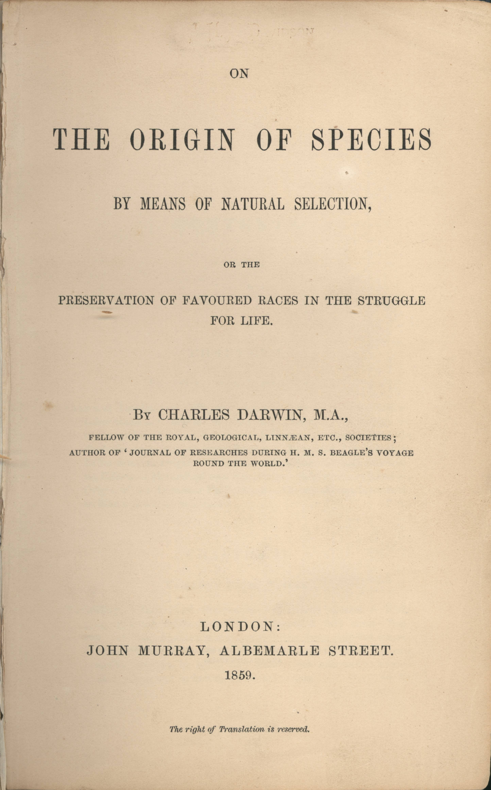

Asal Usul Spesies oleh Charles Darwin (terbit tahun 1859) adalah karya penting dalam literatur ilmiah dan dianggap sebagai tonggak dalam teori evolusi. Judul lengkapnya adalah On the Origin of Species by Means of Natural Selection, or the Preservation of Favoured Races in the Struggle for Life (Tentang Asal Usul Spesies Melalui Cara Seleksi Alam, atau Pelestarian Kelompok Dalam Perjuangan Untuk Hidup). Buku ini memperkenalkan teori ilmiah bahwa populasi berevolusi dari generasi ke generasi melalui proses seleksi alam. Isi buku ini kontroversial karena menentang teori penciptaan menurut kepercayaan agama, dan merupakan pencetus timbulnya ilmu bernama biologi pada abad ke-19. Buku yang ditulisnya merupakan hasil ekspedisi lautnya dengan kapal layar HMS Beagle pada tahun 1830-an, dan dilanjutkan dengan penyelidikan dan eksperimen setelah tiba kembali dari ekspedisi.
Tidak ada ilmuwan yang karyanya masih diperdebatkan dengan panas hingga saat ini, seperti Charles Darwin. Bukunya “The Origin of Species“yang merupakan hasil pengamatannya terhadap alam dan keragaman hayati, merupakan landasan terpenting ilmu biologi khususnya evolusi. Darwin yang mempublikasikan bukunya 150 tahun lalu ketika ia berusia 50 tahun, ketika itu memang tidak sendirian dalam mengembangkan teori evolusinya. Secara terpisah ada beberapa ilmuwan lain yang memiliki gagasan serupa. Namun teori Darwin merupakan landasan dari hampir semua teori evolusi modern. Juga untuk teknik rekayasa genetika, penelitian sel induk atau riset kloning. Namun banyak pihak terutama dari kalangan gereja yang tetap menolak teori evolusi ini.
Charles Darwin menyimpulkan, berbagai keragaman yang ia amati di alam, sebetulnya memiliki nenek moyang yang sama. Ketika ia mempublikasikan bukunya The Origin of Species – By Means Natural Selection atau terjemahan bebasnya, asal usul spesies-berdasarkan seleksi alam pada tahun 1859, dunia ilmu pengetahuan serta gereja geger. Ketika itu, dengan berani Darwin menyampaikan kesimpulan yang dinilai hanya spekulasi. Gereja yang menganut faham penciptaan sempurna, langsung mengecam teori evolusi tsb. Namun seiring dengan perkembangan ilmu pengetahuan, terbukti teori evolusi yang diperkenalkan Darwin hampir semuanya benar secara ilmiah. Ilmu genetika modern juga menegaskan kembali teori Darwin itu. Karena itulah peneliti terkemuka di dunia dan penemu struktur DNA, James Watson memberikan penilaian dan bobot tinggi dalam ilmu biologi terutama evolusi terhadap Darwin, “Bagi saya, Charles Darwin merupakan tokoh yang paling penting.“
Cover "The Origin of Species"
